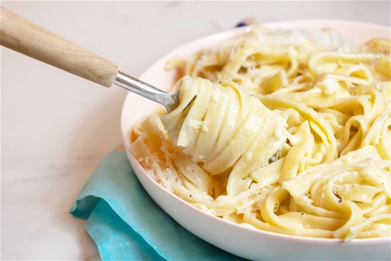

Fettucine al Burro

This super simple pasta recipe can be seen as a more traditional verison of Fettucine Alfredo, or a zhuzhed up buttered noodles!
Either way it is beyond simple and only requres a few key ingredients
Ingredients
- 340g Fettucine, dry works but fresh is ideal
- 6 tablespoons of unsalted butter
- 340g fresh grated parmigiano regiano
- Salt and pepper
Instructions
- Fill a medium pot with water, salt generoulsy, and heat over medium high
- When water reaches a rolling boil immerse pasta, agitating immediately to prevent sticking
- Cook until al dente and toothsome
- Reserve 1 cup of pasta cooking water
- Drain Pasta and remove from heat
- Add butter and 3/4 of parmigiano reggiano, tossing immediately until well combined
- Add pasta cooking water little by little as you mix the pasta, butter, and cheese, until desired sauce consistency is reached.
- Serve and enjoy!
Home